Постинг TEYES: 7 материалов в том виде, как они выйдут – кейс, блог, ВК, карты, Дзен, карусель
17.11.2026, доработано. У каждого материала сначала вид на площадке (ссылка открывает живой макет), ниже – полный текст и что проверить. Ничего не опубликовано.
Что выбрать тебе
- ВК – формат постов-кейсов: картинка «штатная система» (4 варианта) + картинка «экран под плашкой с вопросом» (6 вариантов) – раздел «Пост ВК».
- Дзен – обложка статьи Accord 7: 3 варианта в ленте. Правило агента Дзена от 06.11 запрещает генерировать машину – раз ты просил генерацию, выбери обложку или скажи ставить реальное фото.
- Подписывать ли, что «штатная» картинка в ВК сгенерирована – это не фото этой машины до установки.
Нужно уточнить – факты
- BMW X5 №360: в записи мастера CC3 12″, в каталоге для E70 такой нет – ставили CC4? Камера заднего вида заводская или наша?
- Автозапуск: на странице сигнализаций три цены – 12 000, 9 000, 1 500. В карусели 12 000 – подтверди.
- Accord: CC4 под Accord 7 (работа №279) в каталоге без цены – добавить? Блог: переписать этим текстом страницу модели вместо отдельной статьи?
- Подпись «Артём Галимов» в кейсе и блоге – подтверди.
1. Сайт – SEO-кейс: BMW X5 E70, Teyes 12″
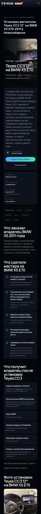
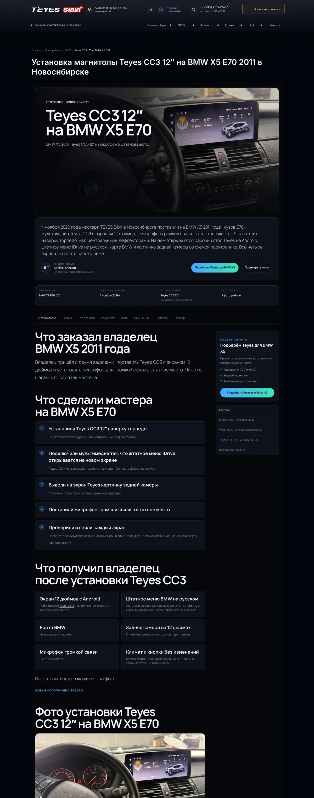
Текст кейса, мета и разметка
Адрес: https://teyes-sibir.ru/work/bmw/ustanovka-teyes-cc3-bmw-x5-e70-novosibirsk
Title (52 знака): Магнитола Teyes CC3 12″ на BMW X5 E70 в Новосибирске
Description (144 знака): BMW X5 2011 (E70): поставили Teyes CC3 12″ и микрофон в штатное место. На экране – Android, меню iDrive, навигация и задняя камера. Фото работы.
H1: Установка магнитолы Teyes CC3 12″ на BMW X5 E70 2011 в Новосибирске
Хлебные крошки: Главная / Наши работы / BMW / Teyes CC3 12″ на BMW X5 E70
Автор: Артём Галимов, основатель техцентра TEYES Sibir
Первый абзац – ответ: 4 ноября 2026 года мастера TEYES Sibir в Новосибирске поставили на BMW X5 2011 года (кузов E70) мультимедиа Teyes CC3 с экраном 12 дюймов, а микрофон громкой связи – в штатное место. Экран стоит наверху торпедо, над центральными дефлекторами. На нём открываются рабочий стол Teyes на Android, штатное меню iDrive на русском, карта BMW и картинка задней камеры со схемой парктроника. Все четыре экрана – на фото работы ниже.
Кнопка: Подобрать Teyes для BMW X5 → форма заявки
H2: Что заказал владелец BMW X5 2011 года
Владелец пришёл с двумя задачами: поставить Teyes CC3 с экраном 12 дюймов и установить микрофон для громкой связи в штатное место. Ниже по шагам, что сделали мастера.
H2: Что сделали мастера на BMW X5 E70
- Установили Teyes CC3 12″ наверху торпедо, на место штатного экрана, над центральными дефлекторами.
- Подключили мультимедиа так, что штатное меню iDrive открывается на новом экране: радио, CD и мультимедиа, телефон, навигация, ConnectedDrive, настройки.
- Вывели на экран Teyes картинку задней камеры с линиями траектории и схемой датчиков парковки.
- Поставили микрофон громкой связи в штатное место.
- После установки мастер открыл каждый экран и снял его на фото: рабочий стол Teyes, меню iDrive, карту, заднюю камеру.
H2: Что получил владелец после установки Teyes CC3
- Экран 12 дюймов с Android и рабочим столом Teyes: на нём компас, скорость, высота и координаты.
- Штатное меню BMW на русском – на том же экране. Слева на экранах меню, камеры и карты видна панель Teyes для перехода в Android.
- Карту BMW на всю ширину экрана.
- Заднюю камеру с линиями траектории и схемой парктроника на 12 дюймах.
- Микрофон громкой связи в штатном месте.
- Блок климата и кнопки под экраном остались на своих местах и не изменились.
Как это выглядит в машине – на фото.
H2: Фото установки Teyes CC3 12″ на BMW X5 E70
 Вид с места водителя: экран Teyes CC3 12″ стоит наверху торпедо, на нём рабочий стол Teyes.
Вид с места водителя: экран Teyes CC3 12″ стоит наверху торпедо, на нём рабочий стол Teyes.
 Главное меню iDrive на новом экране: радио, телефон, навигация, ConnectedDrive, информация об автомобиле, настройки.
Главное меню iDrive на новом экране: радио, телефон, навигация, ConnectedDrive, информация об автомобиле, настройки.
 Картинка задней камеры с линиями траектории, справа – схема датчиков парковки.
Картинка задней камеры с линиями траектории, справа – схема датчиков парковки.
 Карта с Новосибирском на всю ширину экрана, слева панель Teyes.
Карта с Новосибирском на всю ширину экрана, слева панель Teyes.
 BMW X5 в установочном центре TEYES Sibir на Сухарной.
BMW X5 в установочном центре TEYES Sibir на Сухарной.
Перед заказом такой установки на свой X5 полезно знать одну вещь про комплекты.
H2: Что важно знать про магнитолу на BMW X5 E70
В каталоге TEYES Sibir комплекты Teyes для BMW X5 E70 2006–2014 годов идут в двух исполнениях: под штатную систему CCC и под CIC. Цена и состав у них разные, поэтому мастер сначала определяет систему в вашей машине.
Проще всего прислать фото штатного экрана с открытым главным меню. На этом X5 2011 года меню – вертикальный список «Радио, Телефон, Навигация, Office, ConnectedDrive», как на фото выше.
Ещё одна работа на этом кузове – Teyes LUX ONE на BMW X5 E70.
H2: Вопросы о Teyes на BMW X5 E70
Можно ли поставить Teyes на BMW X5 E70 и оставить штатное меню iDrive? Да. На этом BMW X5 2011 года штатное меню iDrive на русском открывается на экране Teyes CC3 12″: радио, телефон, навигация, настройки. Какие функции сохранятся на вашей машине, мастер скажет до установки по системе CCC или CIC и выбранному комплекту.
Куда ставят микрофон Teyes на BMW X5 E70? В этой работе мастер поставил микрофон громкой связи в штатное место BMW. Место согласуем до установки.
Какой комплект Teyes нужен для BMW X5 E70: CCC или CIC? В каталоге TEYES Sibir комплекты для X5 E70 2006–2014 годов идут в двух исполнениях: под штатную систему CCC и под CIC. Пришлите фото штатного экрана с главным меню, и мастер определит, какое исполнение подойдёт.
Сколько стоит установка магнитолы на BMW X5 E70? Установка головного устройства в TEYES Sibir стоит от 4 500 ₽. Teyes CC3 12″ для X5 E70 в каталоге сайта сейчас нет, цену комплекта назовёт менеджер. Для сравнения в каталоге: Teyes CC4 12.3″ для X5 E70 с системой CIC – от 51 190 ₽, CC4 Pro 12.3″ – от 72 040 ₽. Цены на 17.11.2026.
H2: Подберём Teyes для вашего BMW X5 E70
Пришлите год выпуска и фото штатного экрана с главным меню. Мастер определит CCC или CIC, назовёт комплект и цену установки. Адрес: Новосибирск, Сухарная, 35 к13, 1 этаж, помещение 110, пн–пт с 11:00 до 19:00.
Кнопка: Узнать цену для своего X5 → форма заявки
Перелинковка на странице: - Магнитолы Teyes для BMW – в «Что получил» (слово «Teyes CC3») и в «Что важно знать» (слово «каталоге») - Установка Teyes в Новосибирске – в FAQ о цене (слово «от 4 500 ₽») - Teyes LUX ONE на BMW X5 E70 – в «Что важно знать» - Все работы по BMW – в хлебных крошках
Разметка JSON-LD (Article + Service + AutomotiveBusiness + FAQPage + BreadcrumbList):
{
"@context": "https://schema.org",
"@graph": [
{
"@type": "Article",
"@id": "https://teyes-sibir.ru/work/bmw/ustanovka-teyes-cc3-bmw-x5-e70-novosibirsk#article",
"headline": "Установка магнитолы Teyes CC3 12″ на BMW X5 E70 2011 в Новосибирске",
"description": "BMW X5 2011 (E70): поставили Teyes CC3 12″ и микрофон в штатное место. На экране – Android, меню iDrive, навигация и задняя камера. Фото работы.",
"mainEntityOfPage": "https://teyes-sibir.ru/work/bmw/ustanovka-teyes-cc3-bmw-x5-e70-novosibirsk",
"datePublished": "2026-11-17",
"dateModified": "2026-11-17",
"inLanguage": "ru",
"author": {
"@type": "Person",
"name": "Артём Галимов",
"jobTitle": "Основатель техцентра TEYES Sibir"
},
"publisher": {
"@id": "https://teyes-sibir.ru/#org"
},
"image": [
"https://teyes-sibir.ru/work/bmw/ustanovka-teyes-cc3-bmw-x5-e70-novosibirsk/bmw-x5-e70-teyes-cc3-salon.webp",
"https://teyes-sibir.ru/work/bmw/ustanovka-teyes-cc3-bmw-x5-e70-novosibirsk/bmw-x5-e70-teyes-cc3-menyu-idrive.webp",
"https://teyes-sibir.ru/work/bmw/ustanovka-teyes-cc3-bmw-x5-e70-novosibirsk/bmw-x5-e70-teyes-cc3-kamera-zadnego-vida.webp",
"https://teyes-sibir.ru/work/bmw/ustanovka-teyes-cc3-bmw-x5-e70-novosibirsk/bmw-x5-e70-teyes-cc3-navigaciya.webp",
"https://teyes-sibir.ru/work/bmw/ustanovka-teyes-cc3-bmw-x5-e70-novosibirsk/bmw-x5-e70-teyes-sibir-vid-szadi.webp"
],
"about": {
"@id": "https://teyes-sibir.ru/work/bmw/ustanovka-teyes-cc3-bmw-x5-e70-novosibirsk#service"
}
},
{
"@type": "Service",
"@id": "https://teyes-sibir.ru/work/bmw/ustanovka-teyes-cc3-bmw-x5-e70-novosibirsk#service",
"name": "Установка магнитолы Teyes на BMW X5 E70",
"serviceType": "Установка мультимедиа Teyes",
"provider": {
"@id": "https://teyes-sibir.ru/#org"
},
"areaServed": {
"@type": "City",
"name": "Новосибирск"
},
"url": "https://teyes-sibir.ru/services/installation_teyes",
"offers": {
"@type": "Offer",
"priceCurrency": "RUB",
"price": "4500",
"description": "Установка головного устройства, цена от",
"url": "https://teyes-sibir.ru/services/installation_teyes"
}
},
{
"@type": "AutomotiveBusiness",
"@id": "https://teyes-sibir.ru/#org",
"name": "TEYES Sibir",
"url": "https://teyes-sibir.ru/",
"telephone": "+7 995 437-92-66",
"address": {
"@type": "PostalAddress",
"streetAddress": "ул. Сухарная, 35 к13, 1 этаж, помещение 110",
"addressLocality": "Новосибирск",
"addressCountry": "RU"
},
"openingHours": "Mo-Fr 11:00-19:00"
},
{
"@type": "FAQPage",
"@id": "https://teyes-sibir.ru/work/bmw/ustanovka-teyes-cc3-bmw-x5-e70-novosibirsk#faq",
"mainEntity": [
{
"@type": "Question",
"name": "Можно ли поставить Teyes на BMW X5 E70 и оставить штатное меню iDrive?",
"acceptedAnswer": {
"@type": "Answer",
"text": "Да. На этом BMW X5 2011 года штатное меню iDrive на русском открывается на экране Teyes CC3 12″: радио, телефон, навигация, настройки. Какие функции сохранятся на вашей машине, мастер скажет до установки по системе CCC или CIC и выбранному комплекту."
}
},
{
"@type": "Question",
"name": "Куда ставят микрофон Teyes на BMW X5 E70?",
"acceptedAnswer": {
"@type": "Answer",
"text": "В этой работе мастер поставил микрофон громкой связи в штатное место BMW. Место согласуем до установки."
}
},
{
"@type": "Question",
"name": "Какой комплект Teyes нужен для BMW X5 E70: CCC или CIC?",
"acceptedAnswer": {
"@type": "Answer",
"text": "В каталоге TEYES Sibir комплекты для X5 E70 2006–2014 годов идут в двух исполнениях: под штатную систему CCC и под CIC. Пришлите фото штатного экрана с главным меню, и мастер определит, какое исполнение подойдёт."
}
},
{
"@type": "Question",
"name": "Сколько стоит установка магнитолы на BMW X5 E70?",
"acceptedAnswer": {
"@type": "Answer",
"text": "Установка головного устройства в TEYES Sibir стоит от 4 500 ₽. Teyes CC3 12″ для X5 E70 в каталоге сайта сейчас нет, цену комплекта назовёт менеджер. Для сравнения в каталоге: Teyes CC4 12.3″ для X5 E70 с системой CIC – от 51 190 ₽, CC4 Pro 12.3″ – от 72 040 ₽. Цены на 17.11.2026."
}
}
]
},
{
"@type": "BreadcrumbList",
"itemListElement": [
{
"@type": "ListItem",
"position": 1,
"name": "Главная",
"item": "https://teyes-sibir.ru/"
},
{
"@type": "ListItem",
"position": 2,
"name": "Наши работы",
"item": "https://teyes-sibir.ru/work"
},
{
"@type": "ListItem",
"position": 3,
"name": "BMW",
"item": "https://teyes-sibir.ru/work/bmw"
},
{
"@type": "ListItem",
"position": 4,
"name": "Teyes CC3 12″ на BMW X5 E70",
"item": "https://teyes-sibir.ru/work/bmw/ustanovka-teyes-cc3-bmw-x5-e70-novosibirsk"
}
]
}
]
}
Почему так. Спрос по Вордстату (XMLRiver, 17.11.2026): «магнитола бмв х5 е70» – 341 в месяц по России и 9 по Новосибирску, «teyes bmw x5 e70» – 43, «замена магнитолы бмв х5 е70» – 27. Поэтому в title стоят «магнитола», «Teyes», «BMW X5 E70» и город, а модель CC3 отделяет кейс от готовой страницы про LUX ONE на том же кузове, чтобы они не делили один запрос. Каждый блок отвечает на вопрос, который вызывает предыдущий: что заказали → что сделали → что получил → покажите → а мне что подойдёт → сколько стоит → как записаться. Надзаголовков нет, H2 – с ключом или прямым утверждением. Шаблонных шагов «работу выполнили аккуратно», как в образце Camry, и чужой модели в тексте (у Camry там «Прадо 150») нет.
Проверено: title 52 знака, description 144 знака (подсчёт кодом); JSON-LD разобран json.loads без ошибок; длинного тире нет нигде в файле (grep); цены взяты с живых страниц: установка – teyes-sibir.ru/services/installation_teyes, комплекты X5 E70 – API магазина Тильды для /store/catalog/bmw; все ссылки отвечают 200. Смета Вордстата: 17 запросов ≈ 0,43 ₽.
2. Сайт – блог: магнитола на Honda Accord
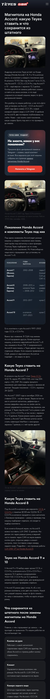
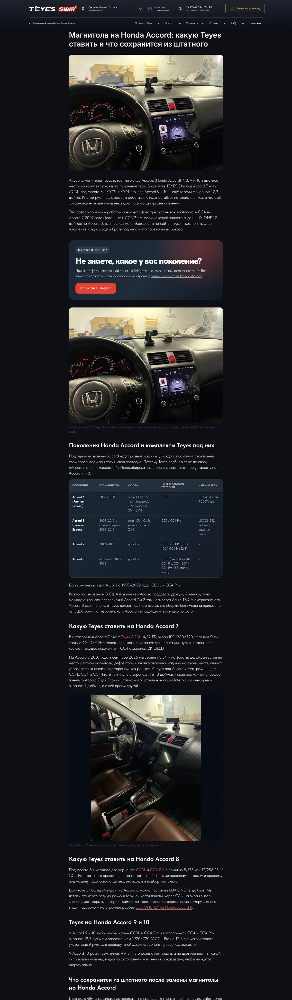
Текст статьи
Статья блога сайта
Мета
| Поле | Значение |
|---|---|
| Адрес | /blog/honda-accord-teyes-headunit |
| Title (59) | Android-магнитола на Honda Accord 7–10: какую Teyes ставить |
| Description (154) | Какая Teyes встаёт на Honda Accord 7, 8, 9 и 10, что остаётся от штатной магнитолы и что прислать для подбора. По каталогу и нашим работам в Новосибирске. |
| H1 | Магнитола на Honda Accord: какую Teyes ставить и что сохранится из штатного |
| Главный запрос | андроид магнитола хонда аккорд |
| Соседние | установка андроид магнитолы хонда аккорд 8; установка магнитолы аккорд 8; установка магнитолы хонда аккорд 7; магнитола аккорд |
| Ведёт на | /multimedia_teyes/honda/accord (страница модели) и /services/installation_teyes |
| Автор | Артём Галимов, основатель техцентра TEYES Sibir |
| Картинки | honda-accord-7-teyes-cc4-panel.webp (обложка и в тексте), honda-accord-7-teyes-cc4-salon.webp, honda-accord-teyes-cc3-2k-kamera.webp – все с наших работ, номеров в кадре нет |
Магнитола на Honda Accord: какую Teyes ставить и что сохранится из штатного
Андроид магнитола Teyes встаёт на Хонда Аккорд (Honda Accord) 7, 8, 9 и 10 в штатное место, но комплект у каждого поколения свой. В каталоге TEYES Sibir под Accord 7 есть CC3L, под Accord 8 – CC3L и CC4 Pro, под Accord 9 и 10 – ещё версии с экраном 12,3 дюйма. Кнопки руля после замены работают, климат остаётся на своих кнопках, а что ещё сохранится на вашей машине, видно по фото центральной панели.
Это разбор по нашим работам: у нас есть фото трёх установок на Accord – CC4 на Accord 7 2007 года (фото ниже), CC3 2K с новой камерой заднего вида и LUX ONE 12 дюймов на Accord 8, две последние опубликованы на сайте. Ниже – как понять своё поколение, какую модель брать под него и что проверить до заказа.
Не знаете, какое у вас поколение? Пришлите фото центральной панели в Telegram – скажем, какой комплект встанет. Все варианты для этой машины собраны на странице замена магнитолы Honda Accord.
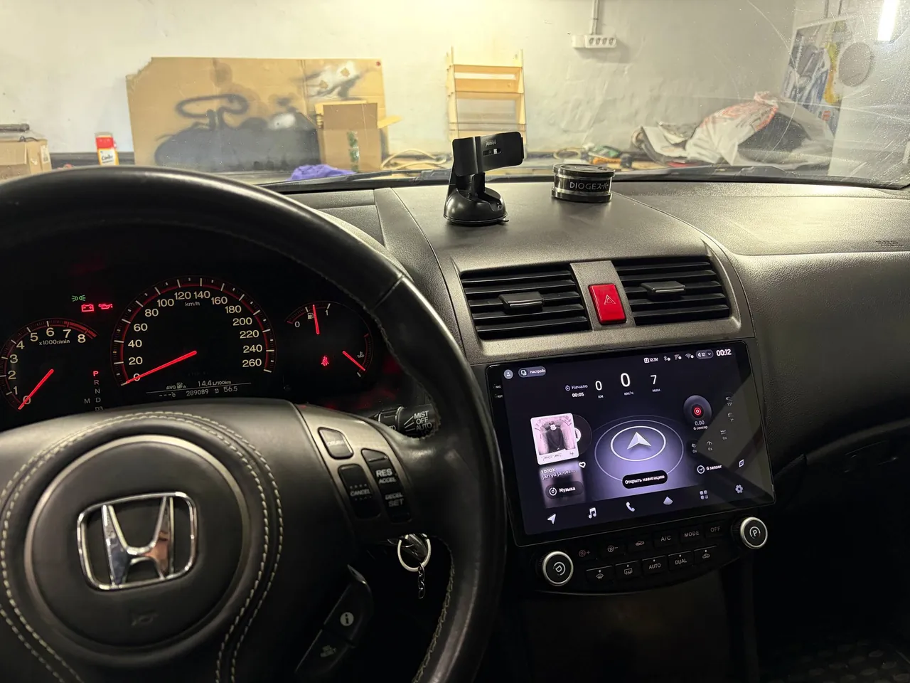
Honda Accord 7, 2007 год: Teyes CC4 в штатном месте, климат по-прежнему на своих кнопках. Работа TEYES Sibir, сентябрь 2026.Поколения Honda Accord и комплекты Teyes под них
Под одним названием Accord ездят разные машины: у каждого поколения своя панель, свой проём под магнитолу и своя проводка. Поэтому Teyes подбирают не по слову «Accord», а по поколению. Из Новосибирска чаще всего спрашивают про установку на Accord 7 и 8.
| Поколение | Годы выпуска | Кузова | Teyes в каталоге TEYES Sibir | Наши работы |
|---|---|---|---|---|
| Accord 7 (Япония, Европа) | 2002–2008 | седан CL7, CL8 (полный привод), CL9; универсал CM1–CM3 | CC3L | CC4 на Accord 7 2007 года |
| Accord 8 (Япония, Европа) | 2008–2015, в каталоге Teyes – 2008–2012 | седан CU1–CU3; универсал CW1–CW3 | CC3L, CC4 Pro | LUX ONE 12 дюймов в отдельной рамке |
| Accord 9 | 2012–2017 | кузов CR | CC3L, CC4 Pro, CC4 12,3", CC4 Pro 12,3" | – |
| Accord 10 | в каталоге 2017–2023 | кузов CV | CC3L (рамка A или B), CC4 Pro, CC4 12,3" и CC4 Pro 12,3" (тип A или B) | – |
Есть комплекты и для Accord 6 1997–2002 года: CC3L и CC4 Pro.
Важно про название. В США под именем Accord продавали другую, более крупную машину, а японско-европейский Accord 7 и 8 там назывался Acura TSX. У американского Accord 8 своя панель, и Teyes делает под него отдельные сборки. Если машина привезена из США, рамка от европейского Accord не подойдёт – это видно по фото.
Какую Teyes ставить на Honda Accord 7
В каталоге под Accord 7 стоит Teyes CC3L: 4/32 ГБ, экран IPS 1280×720, слот под SIM-карту с 4G, DSP. Это модель прошлого поколения: для навигации, музыки и звонков её хватает. Текущее поколение – CC4 с экраном 2K QLED.
На Accord 7 2007 года в сентябре 2026 мы ставили CC4 – на фото выше. Экран встал на место штатной магнитолы, дефлекторы и кнопка аварийки над ним на своём месте, климат управляется кнопками под экраном, как раньше. У Teyes под Accord 7 есть рамки и для CC4L, CC4 и CC4 Pro, в том числе с экраном 11 и 13 дюймов. Какая рамка нужна, решает панель: у Accord 7 для Японии штатно могла стоять навигация InterNavi с сенсорным экраном 7 дюймов, и с ней проём другой.
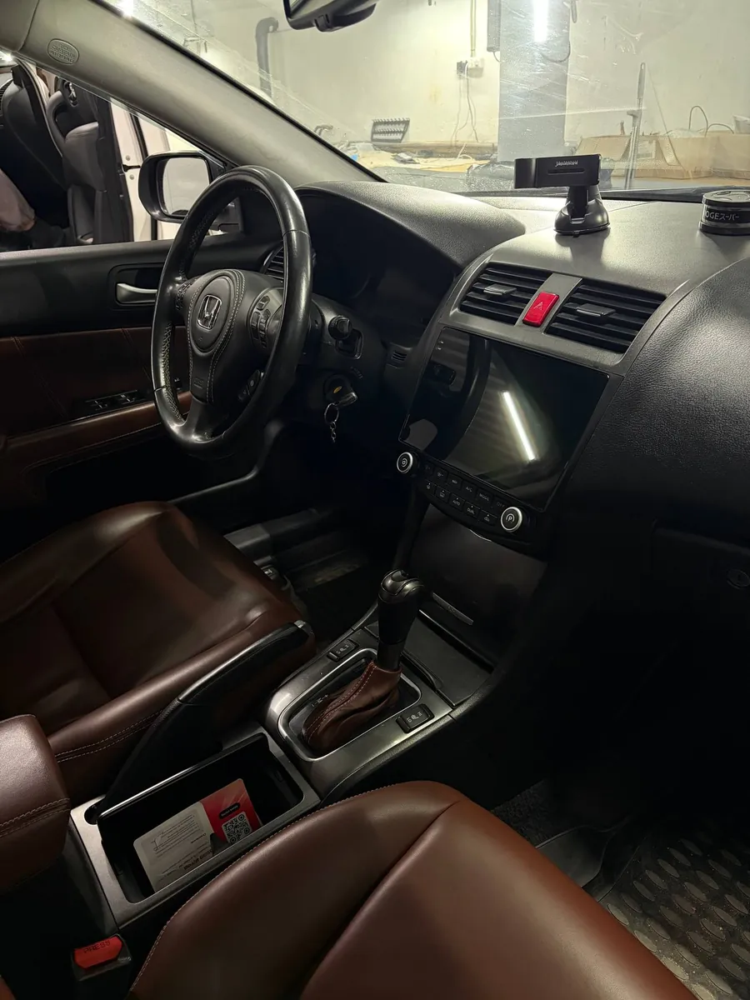
Тот же Accord 7: экран вписан в штатную панель, отделку салона не меняли.Какую Teyes ставить на Honda Accord 8
Под Accord 8 в каталоге два варианта: CC3L и CC4 Pro с памятью 8/128 или 12/256 ГБ. У CC4 Pro в каталоге продаётся сама магнитола с базовыми проводами – рамку и проводку под машину подбирают отдельно, это входит в подбор комплекта.
Если хочется большой экран, на Accord 8 можно поставить LUX ONE 12 дюймов. Мы делали это через редкую рамку в верхней части панели: через CAN на экран вывели кнопки руля, открытые двери и климат-контроль, плюс поставили новую камеру заднего вида. Подробно – на странице работы LUX ONE 12″ на Honda Accord 8.
Teyes на Honda Accord 9 и 10
У Accord 9 и 10 выбор шире: кроме CC3L и CC4 Pro, в каталоге есть CC4 и CC4 Pro с экраном 12,3 дюйма и разрешением 1920×720. У CC4 Pro на 12,3 дюйма в каталоге указан левый руль: для праворульной машины вариант проверяем отдельно.
У Accord 10 рамки двух типов, A и B, и это разные комплекты, а не цвет или память. Какой тип у вашей машины, видно по фото панели – по нему и заказываем, чтобы не ждать вторую рамку.
Что сохранится из штатного после замены магнитолы на Honda Accord
Главное, о чём спрашивают до записи, – не пропадёт ли привычное. По нашим работам на Accord выходит так:
- Кнопки на руле. Работают с новой магнитолой: подключаем через CAN или адаптер. На обоих Accord со страниц работ кнопки сохранились.
- Климат. Управляется своими кнопками, как раньше. На Accord 8 с LUX ONE его состояние ещё и выводится на экран.
- Камера заднего вида. Штатную подключаем через адаптер, если подходит её сигнал; если нет – ставим новую. На Accord с CC3 2K поставили новую камеру с линиями, которые изгибаются при повороте руля.
- Штатный усилитель и USB. Проверяем по комплектации до заказа: от этого зависит, какие переходники нужны.
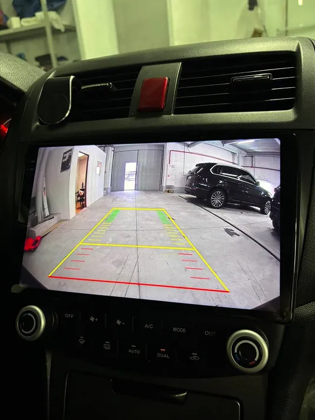
Honda Accord с Teyes CC3 2K и новой камерой заднего вида. Работа TEYES Sibir.Что даёт сама магнитола: Яндекс Навигатор и 2ГИС, музыку по Bluetooth и через интернет SIM-карты, беспроводные CarPlay и Android Auto на CC4 и CC4 Pro.
Honda Accord из Японии: что проверить до заказа
Праворульный Accord из Японии отличается от европейского не только рулём. В комплектации могла стоять штатная навигация с экраном, а не простая магнитола, и тогда рамка нужна под другой проём. Японское меню, карты Японии и японский FM-диапазон уходят вместе со штатной магнитолой – новая Teyes ловит наши станции и ведёт по нашим картам.
Если вы ещё думаете, не перевести ли японскую магнитолу на русский, сначала сравните: перевод меню не ускоряет старое устройство и не всегда даёт поставить нужные приложения. Об этом – на странице русификации и замены на Honda Accord.
Как подобрать Teyes на ваш Honda Accord
Подбор начинается с фото, а не с названия модели. Пришлите в Telegram одним сообщением:
- Центральную панель прямо, при включённом зажигании.
- Панель приборов при включённом зажигании – по ней видно рынок.
- Руль с кнопками.
- Год выпуска и, если знаете, номер кузова.
- Есть ли камера заднего вида и шильдик аудиосистемы на дверях.
По фото определим поколение и рынок, проверим рамку и разъёмы, скажем, что сохранится из штатного, и назовём состав комплекта. Сама установка на Accord с CC3 2K заняла у нас один день. Приезжайте: Новосибирск, Сухарная 35 корпус 13, пн–пт с 11:00 до 19:00 – покажем экраны вживую и сравним модели. Цены комплектов – в каталоге Teyes для Honda.
Подберём Teyes под ваш Accord по одному фото панели. Написать в Telegram · +7 (995) 437-92-66 · Установка Teyes в TEYES Sibir
Вопросы об установке Teyes на Honda Accord
Какую магнитолу Teyes поставить на Honda Accord 8?
В каталоге под Accord 8 есть CC3L и CC4 Pro. CC4 Pro – старшая модель с памятью 8/128 или 12/256 ГБ, к ней подбирают рамку и проводку под машину. Если нужен экран побольше, на Accord 8 встаёт LUX ONE 12 дюймов в отдельной рамке – мы такое делали.
Сохранятся ли кнопки на руле Accord после замены магнитолы?
Да, кнопки руля подключаются к Teyes через CAN или адаптер. На обоих Accord, которые есть у нас на сайте, они работают. Какой адаптер нужен вашей машине, видно по фото руля и году.
Можно ли оставить штатную камеру заднего вида?
Можно, если её сигнал подходит к Teyes – тогда подключаем через адаптер. Если не подходит или камеры нет, ставим новую, как на Accord с CC3 2K.
Подойдёт ли рамка от европейского Accord на Accord из США?
Нет. Американский Accord 7 и 8 – другая машина с другой панелью, под американский Accord 8 у Teyes отдельные сборки. Пришлите фото панели, и мы скажем, какая рамка ваша.
Что прислать для подбора Teyes на Accord?
Фото центральной панели и приборов при включённом зажигании, руль, год выпуска и есть ли камера заднего вида. По этому определяем поколение, рынок и состав комплекта до заказа.
Каталог и работы по Honda Accord
- Замена магнитолы и русификация Honda Accord
- Каталог Teyes для Honda
- Teyes CC3L для Honda Accord 7
- Teyes CC4 Pro для Honda Accord 8
- Работа: Teyes CC3 2K и камера на Honda Accord
- Работа: Teyes LUX ONE 12″ на Honda Accord 8
- Установка Teyes в Новосибирске
- Сигнализация StarLine с автозапуском – можно в тот же визит
- Все статьи блога
Автор: Артём Галимов, основатель техцентра TEYES Sibir.
[
{
"@context": "https://schema.org",
"@type": "Article",
"headline": "Магнитола на Honda Accord: какую Teyes ставить и что сохранится из штатного",
"description": "Какая Teyes встаёт на Honda Accord 7, 8, 9 и 10, что остаётся от штатной магнитолы и что прислать для подбора. По каталогу и нашим работам в Новосибирске.",
"image": "https://static.tildacdn.com/tild6165-3664-4664-a339-636363313766/Jfp-FNaEZ-kqA3g19C0W.png",
"datePublished": "2026-11-17",
"dateModified": "2026-11-17",
"inLanguage": "ru",
"mainEntityOfPage": "https://teyes-sibir.ru/blog/honda-accord-teyes-headunit",
"author": {
"@type": "Person",
"name": "Артём Галимов",
"jobTitle": "основатель техцентра TEYES Sibir"
},
"publisher": {
"@type": "Organization",
"name": "TEYES Sibir",
"url": "https://teyes-sibir.ru",
"telephone": "+7 995 437-92-66",
"address": {
"@type": "PostalAddress",
"streetAddress": "ул. Сухарная, 35, корпус 13, помещение 110",
"addressLocality": "Новосибирск",
"postalCode": "630001",
"addressCountry": "RU"
}
},
"about": {
"@type": "Car",
"name": "Honda Accord",
"brand": { "@type": "Brand", "name": "Honda" }
}
},
{
"@context": "https://schema.org",
"@type": "FAQPage",
"mainEntity": [
{
"@type": "Question",
"name": "Какую магнитолу Teyes поставить на Honda Accord 8?",
"acceptedAnswer": { "@type": "Answer", "text": "В каталоге под Accord 8 есть CC3L и CC4 Pro. CC4 Pro – старшая модель с памятью 8/128 или 12/256 ГБ, к ней подбирают рамку и проводку под машину. Если нужен экран побольше, на Accord 8 встаёт LUX ONE 12 дюймов в отдельной рамке – мы такое делали." }
},
{
"@type": "Question",
"name": "Сохранятся ли кнопки на руле Accord после замены магнитолы?",
"acceptedAnswer": { "@type": "Answer", "text": "Да, кнопки руля подключаются к Teyes через CAN или адаптер. На обоих Accord, которые есть у нас на сайте, они работают. Какой адаптер нужен вашей машине, видно по фото руля и году." }
},
{
"@type": "Question",
"name": "Можно ли оставить штатную камеру заднего вида?",
"acceptedAnswer": { "@type": "Answer", "text": "Можно, если её сигнал подходит к Teyes – тогда подключаем через адаптер. Если не подходит или камеры нет, ставим новую, как на Accord с CC3 2K." }
},
{
"@type": "Question",
"name": "Подойдёт ли рамка от европейского Accord на Accord из США?",
"acceptedAnswer": { "@type": "Answer", "text": "Нет. Американский Accord 7 и 8 – другая машина с другой панелью, под американский Accord 8 у Teyes отдельные сборки. Пришлите фото панели, и мы скажем, какая рамка ваша." }
},
{
"@type": "Question",
"name": "Что прислать для подбора Teyes на Accord?",
"acceptedAnswer": { "@type": "Answer", "text": "Фото центральной панели и приборов при включённом зажигании, руль, год выпуска и есть ли камера заднего вида. По этому определяем поколение, рынок и состав комплекта до заказа." }
}
]
},
{
"@context": "https://schema.org",
"@type": "BreadcrumbList",
"itemListElement": [
{ "@type": "ListItem", "position": 1, "name": "Главная", "item": "https://teyes-sibir.ru/" },
{ "@type": "ListItem", "position": 2, "name": "Блог", "item": "https://teyes-sibir.ru/blog" },
{ "@type": "ListItem", "position": 3, "name": "Магнитола на Honda Accord: какую Teyes ставить", "item": "https://teyes-sibir.ru/blog/honda-accord-teyes-headunit" }
]
}
]
Почему так. Спрос: «магнитола аккорд» Новосибирск ≥188 / Россия ≥4 122 и «магнитола honda accord» ≥7 / ≥267 в месяц (Wordstat через XMLRiver, широкое соответствие, 17.11.2026, spros-wordstat-2026-11-17.csv); хвосты по поколениям в Новосибирске – «хонда аккорд установка андроид магнитолы» 19, «установка магнитолы аккорд 8» 19, «установка андроид магнитолы хонда аккорд 8» 10, «установка магнитолы хонда аккорд 7» 5 (Wordstat, 11.11.2026, deford-poteri установка_магнитолы.json). По Новосибирску сильнее Accord только Freed (≥305) и Fit (≥204) – по ним уже есть статьи на Дзене и реальных фото больше; Accord оставил, потому что материала нет ни на одной площадке, есть 5 заездов (лист 24.07.2026), 3 наши работы и спрос, расписанный по поколениям. Ford Focus и Lada сильнее, но решение «берём ли массовые марки» за Артёмом. Главный запрос взят «андроид магнитола хонда аккорд» с разбором по поколениям, чтобы не спорить со страницей модели за «магнитола honda accord».
Что проверить Артёму
1. Каннибализация: страница /multimedia_teyes/honda/accord держит «магнитола honda accord», но поколений не разбирает. Статья или переписать этим текстом саму страницу модели – решение за тобой.
2. Под Accord 7 в каталоге только CC3L (прошлое поколение), а мы ставили CC4 (работа №279, 02.09.2026). Добавить CC4 под Accord 7 в каталог и опубликовать работу №279 – тогда в статью встанет ссылка на неё.
3. «Установка за 1 день» взята со страницы работы CC3 2K. Гарантий в тексте нет: на страницах работ стоят «2 года на оборудование и пожизненная на работы», в базе компании это под вопросом.
4. Подпись автора и author в JSON-LD стоят, а внедрять подпись ты велел по отдельному слову (01.11.2026) – подтверди. Article.image сейчас указывает на фото камеры с CDN Тильды: после загрузки поменять на honda-accord-7-teyes-cc4-panel.webp, а datePublished – на дату выхода.
3. ВК – пост-кейс BMW X5
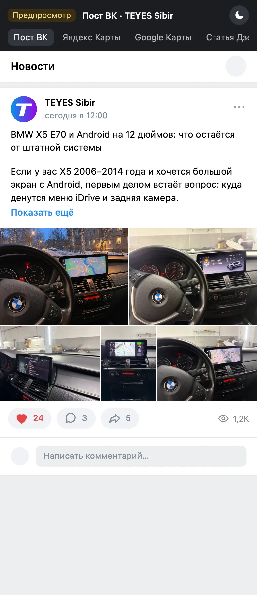
Пост ВК: варианты картинок
Кейс №360, BMW X5 E70 2011, Teyes CC3 12″. Пост из двух картинок-обложек: первая – «как было» со штатным экраном BMW, вторая – реальный кадр «после», где новый экран закрыт плашкой с вопросом. Ответ на вопрос – в тексте поста и на реальных фото дальше в карусели. Выберите по одной картинке каждого вида – эта пара станет форматом постов-кейсов.
Картинка 1 – штатная система (было)
Все четыре нарисованы Codex от реального кадра этой машины: руль, приборка, дефлекторы, климат и радио – свои. Новый экран убран, вместо него штатный экран E70 (CIC, 8,8″) в нише торпедо с главным меню iDrive. Форму ниши и меню сверил с фото салона X5 E70 и экрана CIC X5 2013 года с Wikimedia Commons. Людей, текста и читаемых номеров нет.
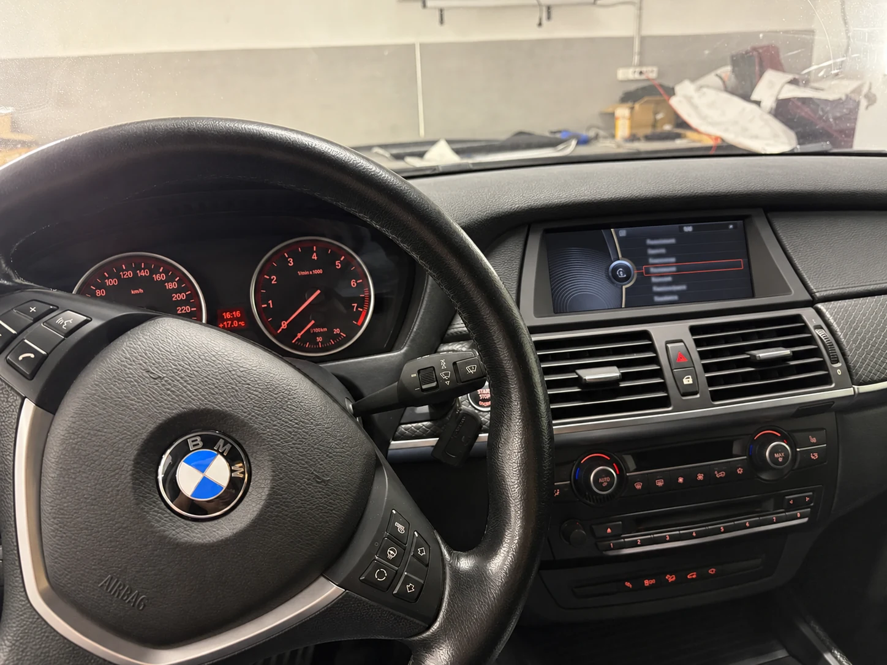
1-а – ракурс и свет как на реальном кадре, за стеклом наш цех.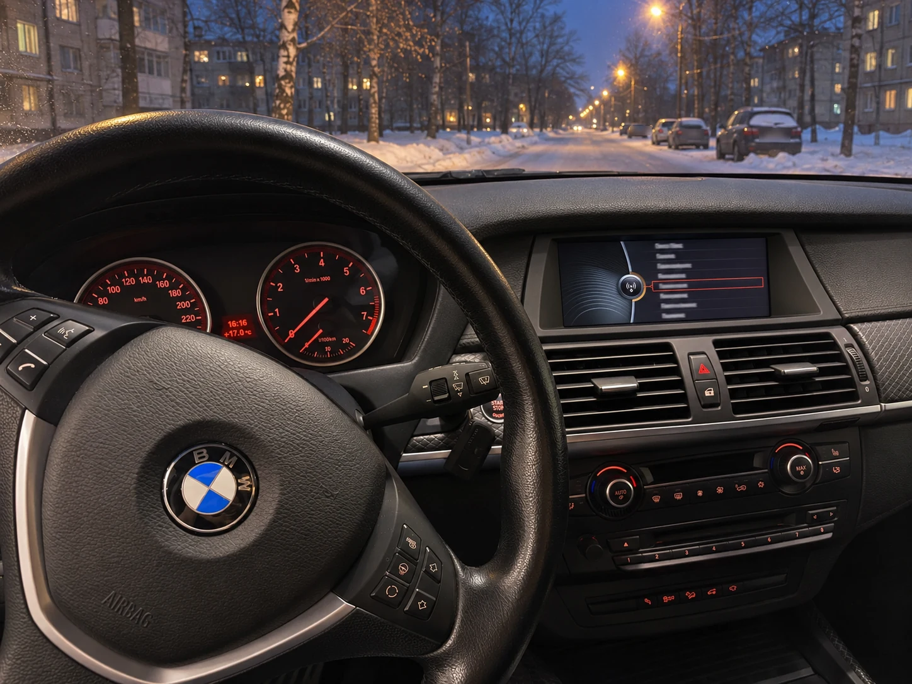
1-б – тот же ракурс, вечер, зимний двор, фонари.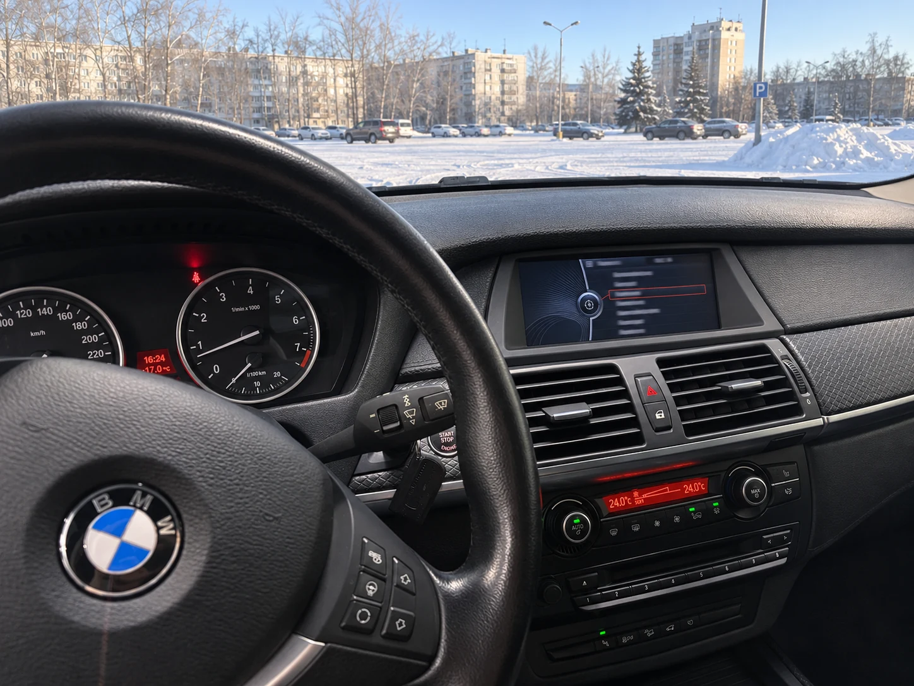
1-в – ракурс кадра с картой, солнечный зимний день, парковка.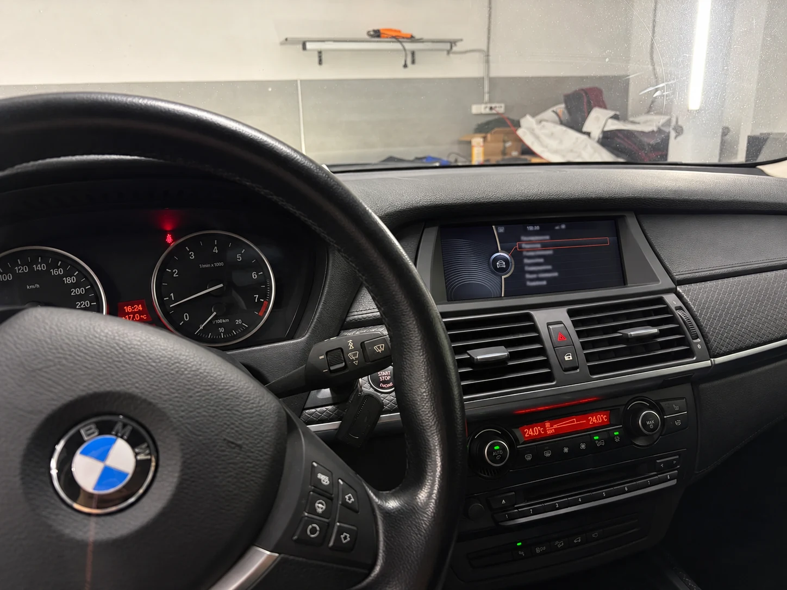
1-г – ракурс кадра с картой, свет и цех как на реальном фото.
Картинка 2 – экран закрыт плашкой с вопросом
Реальные кадры работы, плашку и текст рисует скрипт vk-varianty/plashka.py шрифтом карусели TEYES (Inter Tight). На плашке только вопрос и подпись «BMW X5 E70 · Teyes 12″» – утверждений нет.
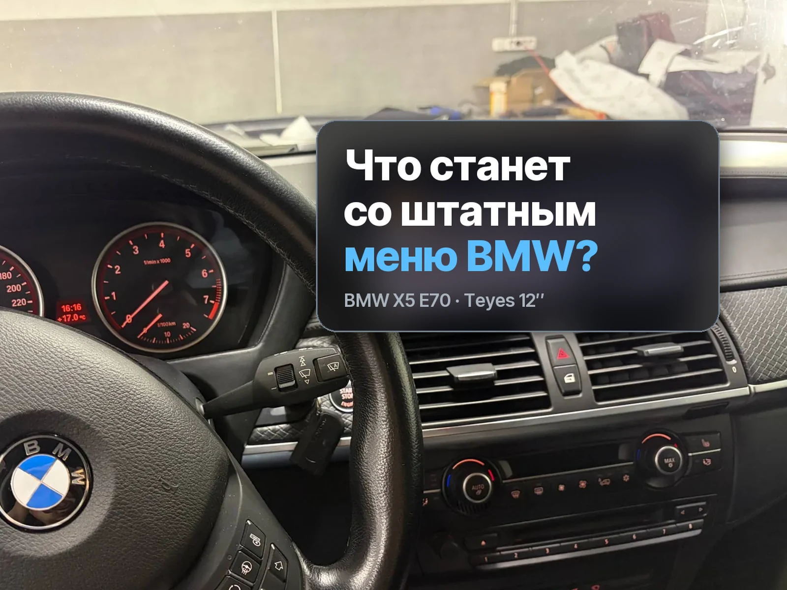
2-а – тёмная матовая плашка с размытым экраном: «Что станет со штатным меню BMW?»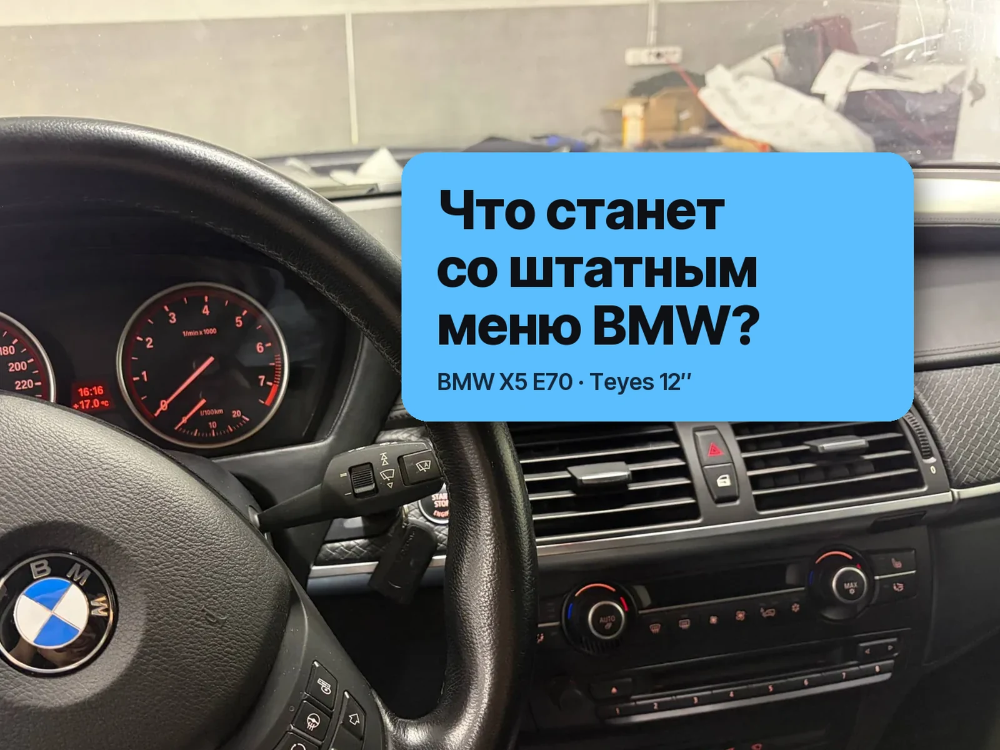
2-б – тот же вопрос на яркой голубой плашке TEYES.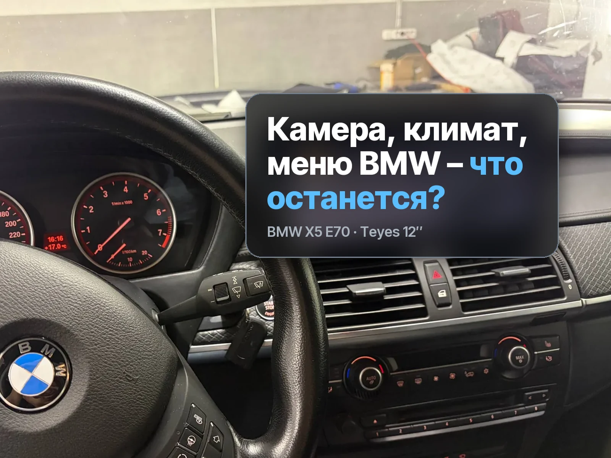
2-в – тёмная: «Камера, климат, меню BMW – что останется?»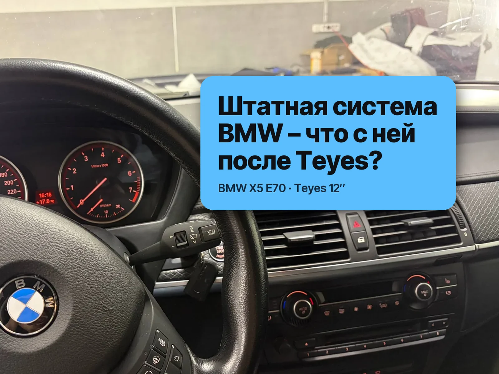
2-г – голубая: «Штатная система BMW – что с ней после Teyes?»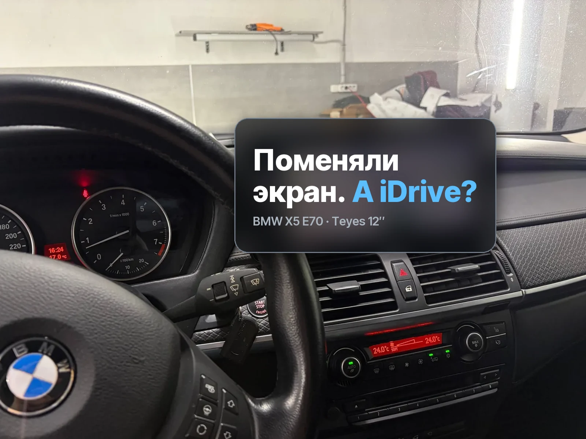
2-д – тёмная, кадр с картой: «Поменяли экран. А iDrive?»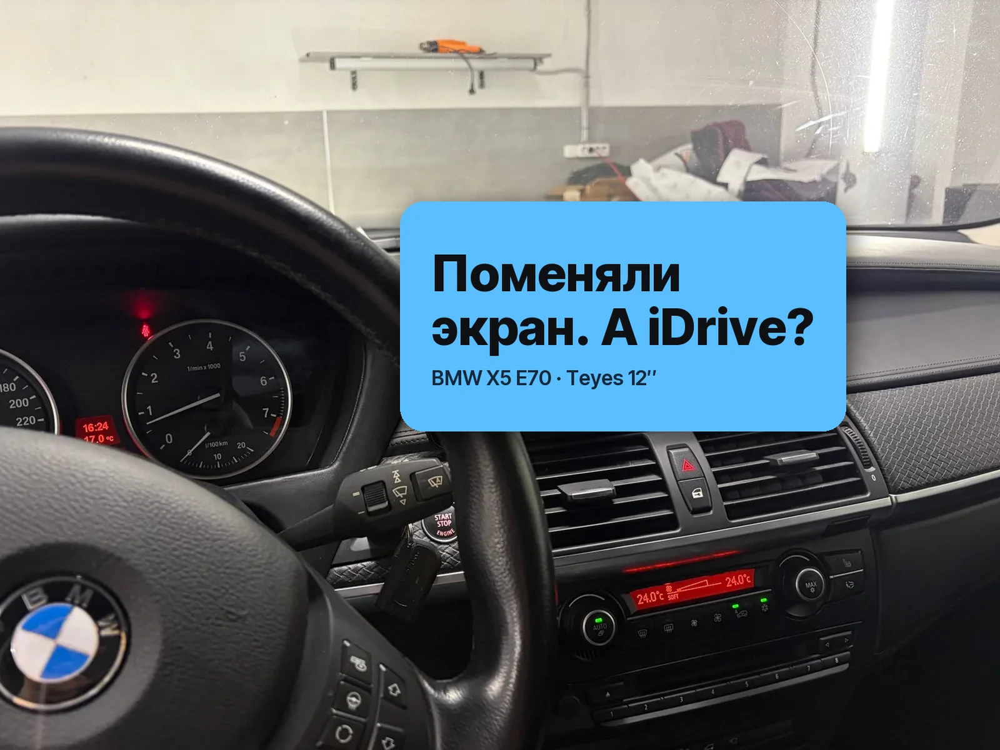
2-е – тот же вопрос на голубой плашке.
Готовые связки
Порядок карусели во всех связках: картинка 1 → картинка 2 → реальные фото (меню iDrive, задняя камера, карта, салон). Текст поста после первой строки – из «Пост ВК» выше, со слов «Если у вас X5 2006–2014 года…».
Связка 1 – про меню. 1-б + 2-а. Первая строка: «Штатное меню iDrive на BMW X5 E70 после Teyes 12″ никуда не делось: оно открывается на новом экране, на русском».
Связка 2 – про всё штатное. 1-а + 2-в. Первая строка: «Камера, климат и меню BMW на X5 E70 после Teyes 12″: камера и меню iDrive теперь на большом экране, блок климата под ним остался как был».
Связка 3 – короткая и яркая. 1-в + 2-е. Первая строка: «Поменяли штатный экран BMW X5 E70 на Teyes 12″ – а iDrive остался: то же меню на русском, только на 12 дюймах».
Почему так. Пара «было – закрыто» работает как загадка: первая картинка показывает знакомый владельцу E70 экран, вторая прячет новый и задаёт вопрос, который у него и так в голове. Ответ лежит в посте и на следующих фото, поэтому пост дочитывают и листают. Вопросы выбраны так, чтобы на каждый был ответ из записи мастера и фото: меню на русском открывается на Teyes, задняя камера с линиями выведена на экран, климат и кнопки под экраном не тронуты. «Кнопки руля» из исходного списка я убрал – в записи мастера про них ничего нет.
Проверено: все 10 картинок я посмотрел глазами. На вариантах 1 экран утоплен в нишу, как у штатного CIC, и показывает главное меню iDrive: слева круг контроллера, справа вертикальный список, один пункт в красной рамке. Дублей нет (md5). Номера дальних машин на 1-б нечитаемы, рамки номеров я размыл. На вариантах 2 длинного тире нет: скрипт падает, если оно есть. Если текст не влезает, скрипт тоже падает, а не обрезает. Строки выровнены, одного слова в последней строке нет.
Что решить: 1. Какая картинка 1 и какая картинка 2 станут форматом (или одна из связок целиком). 2. Картинка 1 сгенерирована, это не фото этой машины до установки. Подписывать ли это в посте (например, «так выглядел штатный экран»), решаете вы. 3. Стиль плашки для всех будущих кейсов: тёмная матовая или голубая TEYES.
Текст поста
Картинки в порядке карусели: 1.
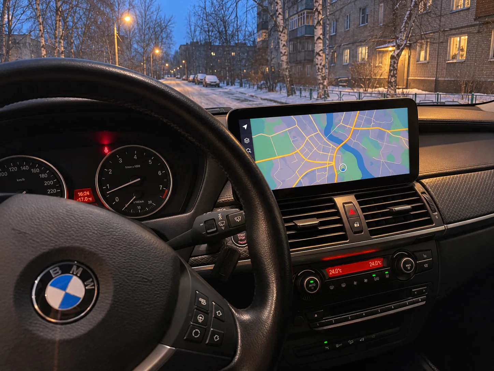
– сгенерирована от реального кадра работы 2.
3.
4.
5.
Текст:
BMW X5 E70 и Android на 12 дюймов: что остаётся от штатной системы
Если у вас X5 2006–2014 года и хочется большой экран с Android, первым делом встаёт вопрос: куда денутся меню iDrive и задняя камера.
В начале ноября такой X5 2011 года был у нас. Мастера поставили Teyes CC3 с экраном 12 дюймов наверху торпедо, над дефлекторами, а микрофон громкой связи – в штатное место. Блок климата и кнопки под экраном остались как были.
Что теперь у владельца на одном экране: – рабочий стол Teyes на Android; – штатное меню iDrive на русском: радио, телефон, навигация, настройки; – карта BMW на всю ширину; – задняя камера с линиями траектории и схемой парктроника.
Для X5 E70 комплекты Teyes делают под штатную систему CCC и под CIC. Хотите так же – напишите в сообщения сообщества год машины и пришлите фото штатного экрана с главным меню. По фото определим систему и подберём комплект.
Магнитолы Teyes для BMW: https://teyes-sibir.ru/store/catalog/bmw?utm_source=vk&utm_medium=social&utm_campaign=keys&utm_content=360_bmw_x5
TEYES Sibir, Новосибирск, Сухарная, 35 к13
Почему так. Пост начинается с ситуации читателя с таким же X5, а не с рассказа о себе; обещания – только то, что видно на фото. Следующий шаг один – сообщение в сообщество с фото экрана: без этого фото комплект не подобрать. Ссылка ведёт в каталог BMW, потому что страницы кейса ещё нет: когда кейс выйдет, адрес заменить на него, метку оставить.
Картинка. Codex imagegen (модель Sol, бесплатно) с первой попытки сделал её от реального кадра с картой (telegram_3135): тот же руль, приборка, экран и климат, за стеклом зимний вечерний двор. На картинке нет текста и людей, номера у дальних машин не читаются. Я посмотрел её глазами. Исходник лежит в ~/.cache/teyes-keys/gen/.
4. Яндекс Карты – новость
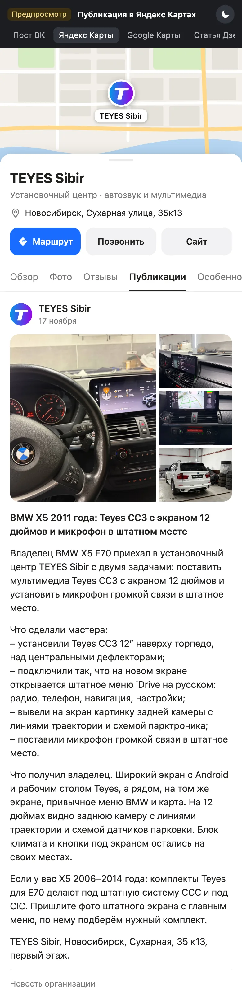
Фото (4): keys/bmw-x5-e70-teyes-cc3-salon.webp, keys/bmw-x5-e70-teyes-cc3-menyu-idrive.webp, keys/bmw-x5-e70-teyes-cc3-kamera-zadnego-vida.webp, keys/bmw-x5-e70-teyes-sibir-vid-szadi.webp
Текст (1 115 знаков):
BMW X5 2011 года: Teyes CC3 с экраном 12 дюймов и микрофон в штатном месте
Владелец BMW X5 E70 приехал в установочный центр TEYES Sibir с двумя задачами: поставить мультимедиа Teyes CC3 с экраном 12 дюймов и установить микрофон громкой связи в штатное место.
Что сделали мастера: – установили Teyes CC3 12″ наверху торпедо, над центральными дефлекторами; – подключили так, что на новом экране открывается штатное меню iDrive на русском: радио, телефон, навигация, настройки; – вывели на экран картинку задней камеры с линиями траектории и схемой парктроника; – поставили микрофон громкой связи в штатное место.
Что получил владелец. Широкий экран с Android и рабочим столом Teyes, а рядом, на том же экране, привычное меню BMW и карта. На 12 дюймах видно заднюю камеру с линиями траектории и схемой датчиков парковки. Блок климата и кнопки под экраном остались на своих местах.
Если у вас X5 2006–2014 года: комплекты Teyes для E70 делают под штатную систему CCC и под CIC. Пришлите фото штатного экрана с главным меню, по нему подберём нужный комплект.
TEYES Sibir, Новосибирск, Сухарная, 35 к13, первый этаж.
Почему так. Около 1 100 знаков – в коридоре 500–1 000 из скилла с небольшим запасом, на телефоне читается без «ещё». Четвёртым фото поставил машину в нашем цехе: карточке на Картах нужна привязка к месту. Телефона, ссылок, слов капсом от 6 букв, «до/после» и длинного тире нет – проверил кодом по запретам скилла yandex-karty-novosti.
5. Google Карты – новость
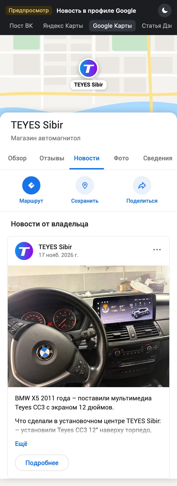
Фото: keys/bmw-x5-e70-teyes-cc3-salon.webp (для окна Google – JPEG той же картинки, ~/.cache/teyes-keys/google-foto.jpg)
Кнопка: «Подробнее» → https://teyes-sibir.ru/store/catalog/bmw?utm_source=google_maps&utm_medium=organic&utm_campaign=gbp_news&utm_content=360_bmw_x5
Текст (642 знака):
BMW X5 2011 года – поставили мультимедиа Teyes CC3 с экраном 12 дюймов.
Что сделали в установочном центре TEYES Sibir: – установили Teyes CC3 12″ наверху торпедо, над дефлекторами; – микрофон громкой связи поставили в штатное место; – вывели на новый экран штатное меню iDrive и картинку задней камеры с парктроником.
Блок климата и кнопки под экраном остались на своих местах. На одном экране теперь открываются и Android, и меню BMW.
Комплекты Teyes для BMW X5 E70 делают под штатную систему CCC и под CIC, поэтому подбираем по фото штатного экрана. Приезжайте на Сухарную, 35 к13 в Новосибирске или смотрите магнитолы для BMW по кнопке.
Почему так. Порядок как у вышедшей новости про Duster: машина и год → что сделали списком → что получил → куда приехать или нажать. Размер экрана есть в записи мастера («12 дюймов»), поэтому его можно писать. Цены и сроков в тексте нет. Кнопка ведёт в каталог BMW, ближайшую живую страницу.
Проверено: proverit(текст, google-foto.jpg, 'LEARN_MORE', ссылка) вернул []; ссылка кнопки отвечает 200.
6. Дзен – статья: лучшая магнитола для Honda Accord 7
Открыть статью как в Дзене → · Три обложки в ленте →
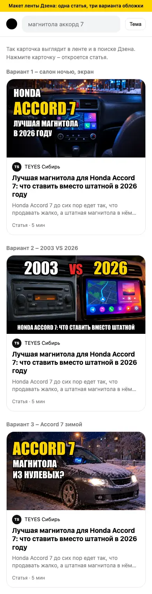
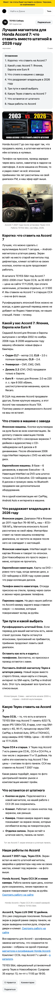
Статья Дзена: Лучшая магнитола для Honda Accord 7: что ставить вместо штатной в 2026 году
Свёрстанный вид: статья в читалке Дзена · карточка в ленте с тремя обложками · текст и источники – dzen-accord7/statya.md. Не опубликовано.
Обложки – генерация Codex (бесплатно), надписи рисует скрипт, номеров и лиц нет.
| Вариант 1 – салон ночью (основной) | Вариант 2 – 2003 VS 2026 | Вариант 3 – Accord 7 зимой |
|---|---|---|
 |
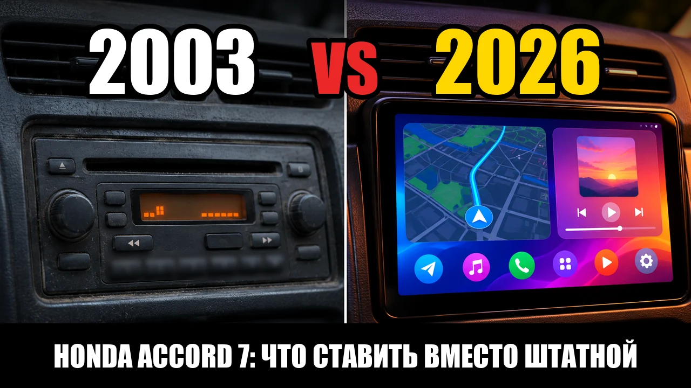 |
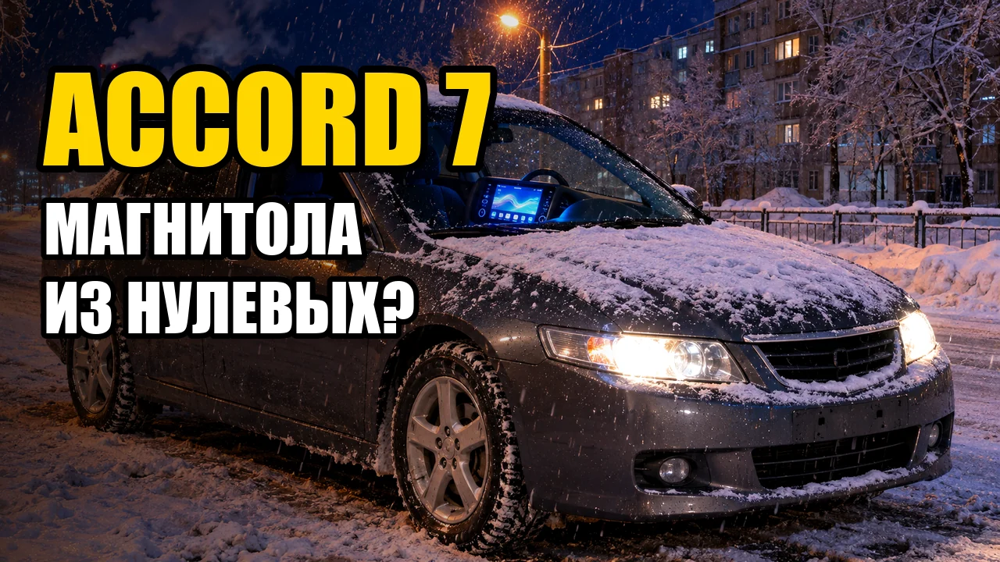 |
Заголовки, из которых выбирал (спрос – Wordstat через XMLRiver, Новосибирск / Россия, 17.11.2026)
| # | Заголовок | Под какой спрос |
|---|---|---|
| 1 ✓ | Лучшая магнитола для Honda Accord 7: что ставить вместо штатной в 2026 году | «магнитола аккорд 7» 70 / 1 578, «магнитола хонда аккорд 7» 27 / 1 025, «штатная магнитола аккорд 7» 25 / 298 |
| 2 | Honda Accord 7 из Японии: радио ловит не всё. Что ставить вместо штатной | японский FM 76–90 МГц; спрос на «радио» и «японец» по Accord 7 – 0 строк |
| 3 | Honda Accord 7: русифицировать японскую магнитолу или менять на Android? | формат Wildlander (37% дочитали), но «аккорд 7 русификация» – 0 строк |
| 4 | Accord 7 – легенда, а магнитола в нём из нулевых | ловит «хонда аккорд 7» 2 946 / 54 888 (вся аудитория модели), но слова «магнитола» в поиске нет |
Почему так. Заголовок держит запрос «магнитола аккорд 7» и формат канала «лучшая магнитола для <модель>» («Лучшая Android-магнитола для Toyota Corolla Cross» – 6 513 показов, 27 переходов на сайт, студия 05.11.2026), а хук несут обложки: Дзен показывает карточку картинкой, поиск ловит слова. Структуру взял у двух лучших статей канала – RAV4 (24 762 показа, 43 перехода) и Wildlander (37% дочитали): сцена в 2 строки, сразу ответ, поколения и рынки, что болит, что сохранится, работы и ссылки. По блогу сайта статья не повторяется: там все поколения, здесь только Accord 7 – комплектации Японии и Европы, японское радио, три пути. Спрос в сырье – dzen-accord7/ws-raw/ (40 запросов ≈ 1 ₽).
Что проверить Артёму 1. Обложки нарисованы нейросетью, а правило агента Дзена (06.11) говорит: машину и панель с нашей работой генерировать нельзя, только сцену. Ты в задании просил генерацию – в тексте фото только настоящие (работа №279 и CC3 2K), обложка не выдаёт себя за нашу работу. Выбери вариант или скажи «на обложку реальное фото». 2. Цена: CC3L под Accord 7 – 30 400 ₽ «со скидкой за наличный расчёт», установка от 3 500 ₽ (сайт, 17.11.2026). Других комплектов под Accord 7 с ценой в каталоге нет; CC4, которую мы ставили, без цены – в статье «считаем по фото панели». Добавить CC4 под Accord 7 в каталог? 3. Работа №279 (CC4 на Accord 7 2007) на сайте не опубликована – ссылки на неё нет, только фото. На странице CC3 2K поколение не названо; по панели (аварийка между дефлекторами, климат с двумя ручками) похоже на Accord 7 – если так, подпиши на сайте, и в статье напишем «Accord 7». 4. «Лучшая» в заголовке – о магнитоле для модели, формат канала, а не превосходство компании; красный список по статье чистый. Публикует только Артём.
7. Дзен – карусель «−30, 7:40. А она молчит»
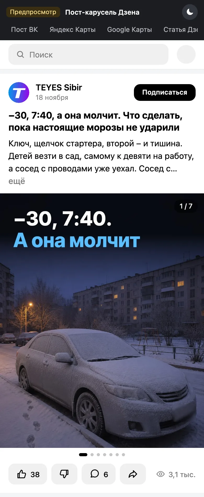
Карусель Дзена: «−30, а она молчит» – автозапуск до морозов
Пост-карусель для канала dzen.ru/teyes_sibir, 7 карточек 1080×1350 (4:5) WebP, ссылка в тексте ведёт на страницу установки сигнализации. Не опубликовано. По плану – ср 18.11.2026.
Карточки по порядку
- Обложка – ситуация: «−30, 7:40. А она молчит»
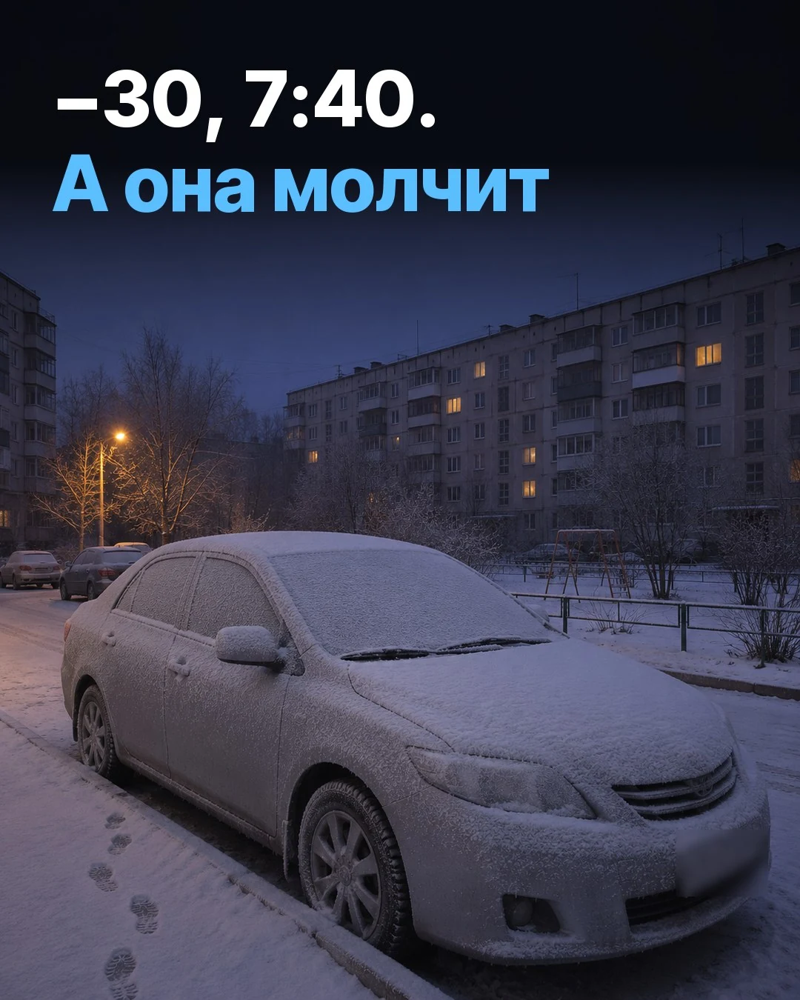
- Боль: «Ключ, щелчок – и тишина»
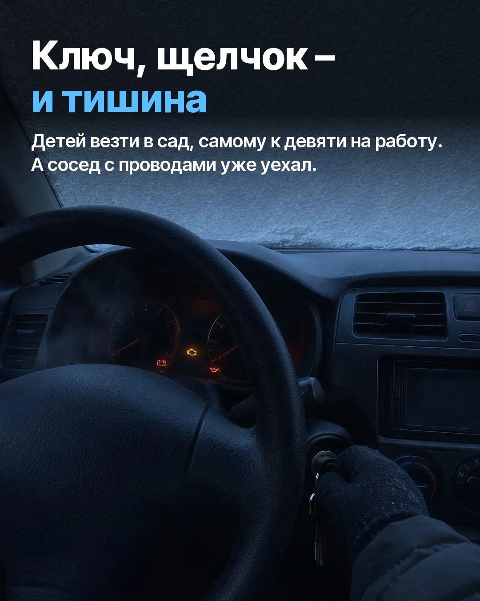
- Объяснение одним слайдом: почему мороз глушит машину
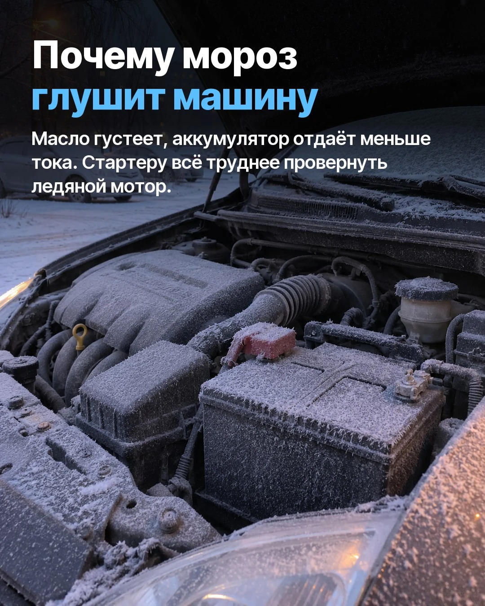
- Что будет, если не решить: провода, такси, «буду позже»
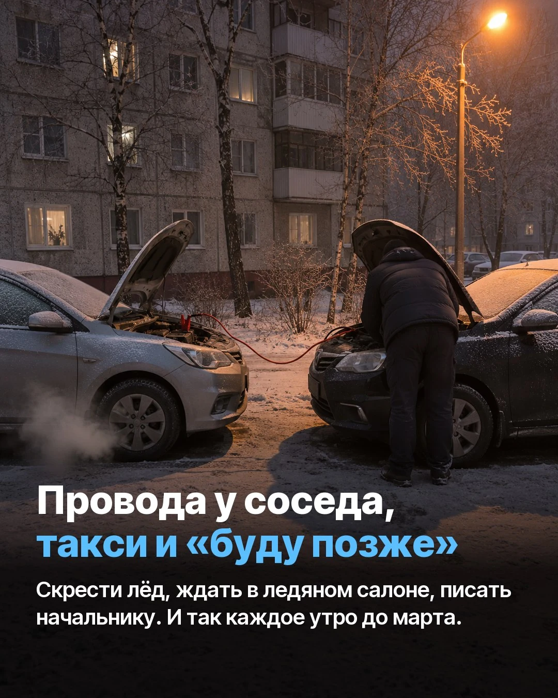
- Как решаем – товар прямо: сигнализация с автозапуском
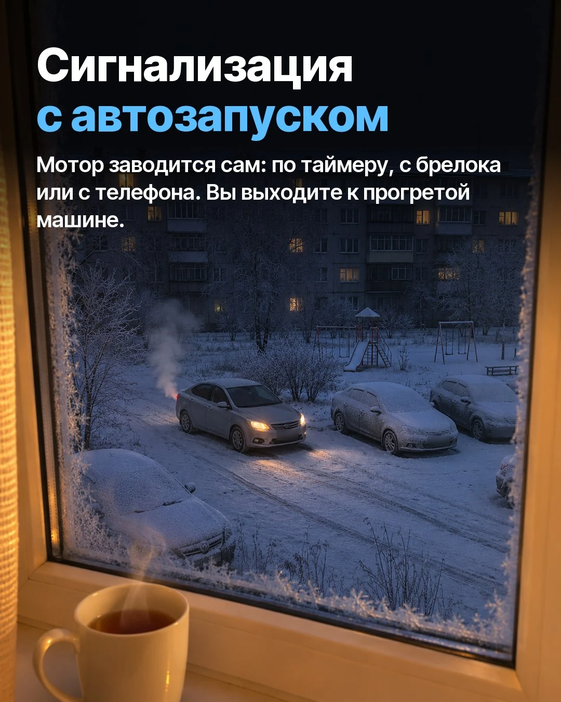
- Цена и наша работа: StarLine и Pandora, установка от 12 000 ₽, StarLine S96 v2 на Toyota Raize
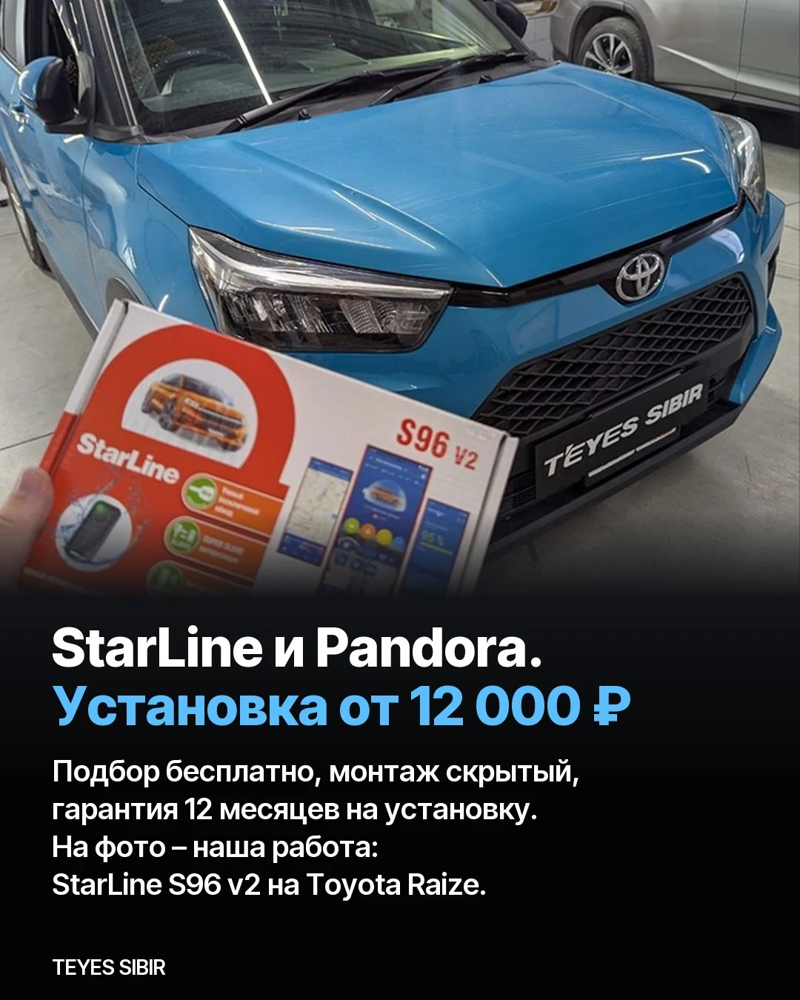
- Призыв: «Поставьте до −30»
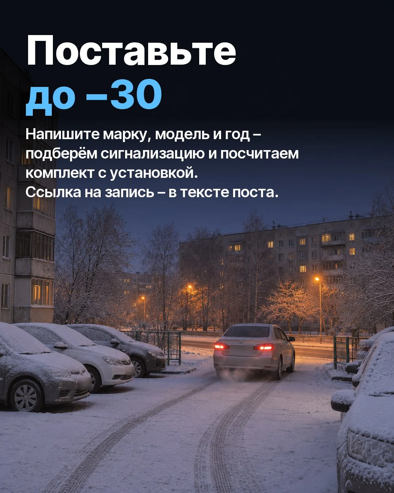
JPG-копии тех же карточек лежат в karusel/jpg/ – на случай, если загрузчик Дзена не примет WebP: в справке форматы не названы.
Первая строка (она же заголовок поста)
−30, 7:40, а она молчит. Что сделать, пока настоящие морозы не ударили
Текст поста целиком (2102 знаков из 4 096)
−30, 7:40, а она молчит. Что сделать, пока настоящие морозы не ударили
Ключ, щелчок стартера, второй – и тишина. Детей везти в сад, самому к девяти на работу, а сосед с проводами уже уехал. Сосед с проводами – лучший друг в декабре, но дружить с ним каждое утро до марта не хочется.
Почему так. На морозе масло густеет, а аккумулятор отдаёт меньше тока. Стартеру всё труднее провернуть ледяной мотор. Чем дольше машина стоит во дворе на холоде, тем тяжелее ей утром.
Что проверить до морозов: 1. Аккумулятор. Попросите в сервисе проверить его под нагрузкой: напряжение «на глаз» ничего не скажет. 2. Клеммы. Окислы и слабый контакт съедают ток, которого на морозе и так мало. 3. Масло. Первое число в маркировке (0W, 5W) – про холодный пуск: чем оно меньше, тем жиже масло на морозе. 4. Незамерзайка и щётки. Залить зимнюю жидкость до первых −20, а не в день, когда стекло уже замёрзло. 5. Автозапуск. Если машина ночует во дворе, а не в тёплом гараже, это главный пункт списка.
Как работает автозапуск. Сигнализация сама заводит мотор: по таймеру, с брелока или с телефона. Вы допиваете чай, смотрите в окно – машина уже работает. Выходите к прогретому мотору и тёплому салону, а не скребёте лёд в ледяной машине. Можно добавить подогрев водительского сиденья и блокировку руля.
Кому это нужно: – тем, кто утром везёт детей и не может опоздать; – тем, кто бережёт мотор и не хочет трогаться на ледяном; – тем, кому надоело 15 минут сидеть в холодном салоне, пока оттает стекло.
Что у нас. TEYES Sibir в Новосибирске ставит сигнализации StarLine и Pandora с автозапуском. Подбор оборудования – бесплатно, монтаж скрытый, без следов, гарантия 12 месяцев на установку. Установка сигнализации с автозапуском – от 12 000 ₽, работа – 4–6 часов. Точную цену комплекта «сигнализация + установка» посчитаем под вашу машину и бюджет.
На карусели – наша работа: StarLine S96 v2 на Toyota Raize.
Посчитать комплект и записаться – на странице установки сигнализации. Напишите марку, модель и год – подберём, что поставить, пока не ударило −30.
TEYES Sibir: Новосибирск, Сухарная 35 к13, пн–пт 11:00–19:00.
Ссылка
Одна, встроенная: выделить слова «на странице установки сигнализации» и вставить адрес. На карточках ссылок нет.
https://teyes-sibir.ru/services/alarm_installation?utm_source=dzen&utm_medium=post&utm_campaign=moroz_avtozapusk
Адрес отвечает 200 (проверено curl 17.11.2026).
Почему так
- Спрос: «не заводится машина» – 2 049 в месяц по Новосибирску и 132 887 по России; «сигнализация с автозапуском» – 2 507 / 115 287 (Wordstat через XMLRiver, 17.11.2026, план
teyes-posting-363c9fe4/dannye/dzen.md). Тема из широкого спроса, товар появляется на 5-й карточке. - Факты только с живой страницы teyes-sibir.ru/services/alarm_installation (снята 17.11.2026): StarLine и Pandora, автозапуск по таймеру, управление со смартфона, бесплатный подбор, монтаж без следов, гарантия 12 месяцев на установку, 4–6 часов работы, опции подогрев сиденья и блокировка руля, «Сигнализация с автозапуском – от 12 000 руб» в таблице «Стоимость установки сигнализации».
- Картинки: 6 сцен нарисовал Codex imagegen (бесплатно) – двор Новосибирска в ноябре, тонкий снег и иней, как в прогнозе на 18.11 (−6…+2, пасмурно, open-meteo); машины массовые, не Lada, без лиц; номера размыты по рамке. Карточка 6 – реальное фото работы с сайта (Toyota Raize, StarLine S96 v2, табличка TEYES SIBIR вместо номера). Текст на карточках рисует скрипт
redakciya/scripts/karusel.py, не нейросеть. Формат 4:5 – справка Дзена размер не задаёт (до 10 картинок, до 30 МБ, первая – обложка, кадрирование в редакторе).
Что проверить Артёму
- Цена. На странице две цены автозапуска: в таблице «Стоимость установки» – от 12 000 руб, во вкладках «Сигнализации с автозапуском» – от 9 000 р, а в копии вкладок для телефона – от 1 500 р (похоже на ошибку копирования). В карусели и посте – 12 000 ₽. Какая верная? 1 500 на сайте стоит поправить.
- Фото Raize: это наша работа и на ней стоял автозапуск? Подпись «наша работа: StarLine S96 v2 на Toyota Raize».
- Метка: по правилу «скрытая UTM» для чужой площадки чище адрес
/go/dzen-moroz/с 301 на страницу с меткой – если Тильда даст сделать редирект. Сейчас метка в адресе, но в посте адрес спрятан под словами, читатель его не видит. - Выкладка: публикуете вы; первый пост канала – заодно тест, кликается ли встроенная ссылка в ленте и доходит ли метка до Метрики (считать по utm_campaign=moroz_avtozapusk и рефереру dzen.ru).
Что проверить – кейс BMW, ВК, карты
- Teyes CC3 12″ для X5 E70 в каталоге сайта нет, там только CC4 12.3″ и CC4 Pro 12.3″. Модель в записи верная? Если ставили CC4, поправить везде, и тогда цену можно писать из каталога.
- Кузов E70 и система CIC выведены из года (2011) и вида меню на фото, в записи мастера этого нет.
- Задняя камера: на фото она в интерфейсе штатной системы со схемой парктроника. Камера заводская или её ставили мы? Если ставили – это отдельная работа, её надо добавить в тексты.
- Карта на фото 4 – штатная навигация BMW (так я её подписал) или приложение на Teyes?
- Кнопки руля, штатный звук, контроллер iDrive не упомянуты ни в записи, ни на фото – я про них не писал. Если работают, можно добавить строку.
- Где именно штатное место микрофона – в записи этого нет, в текстах написано без места.
- Ссылки ВК и Google ведут в каталог BMW, пока страницы кейса нет. После выхода кейса заменить адрес, метки оставить. Адреса картинок в JSON-LD заменить на адреса из Тильды после загрузки; дату
datePublishedпоставить по дню выхода. - Автор Артём Галимов стоит в странице и в разметке, как на живом кейсе Camry. По памяти автора внедряют только по отдельному слову – подтвердить.
Что раскрыть
- Почему для кейса взял BMW X5.
- Как эти форматы встанут в недельный ритм завода.